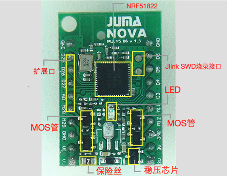

NOVA的硬件资源介绍
1. NOVA的设计初衷
设计NOVA是为了应对各种常见的需要进行蓝牙控制的场合，可以将其理解为是为了应对常见控制场合而设计的一个万用型的解决方案。 非常的适合DIY与简单的蓝牙控制领域。
2. NOVA的应用场景
NOVA主要被设计用来解决日常中，常见的一些简单的控制领域的问题。
现有的用蓝牙来作为控制的方案中经常会存在的问题是： 采用MCU+蓝牙模块的方案中：
- MCU供电系统与蓝牙模块电平不匹配，需要另外去设计电平转换部分的电路。
- 蓝牙模块的接口与一般的洞洞板等不匹配，需要专门的设计电路板或者是各种飞线，非常的不利于开发。
- 板上没有任何的状态指示器件，设备有没有工作无法得知，在DIY设备中会受到很大的制约。
直接的片上系统（SOC)中：
- 本来只是一个很简单的需求，比如控制一个大功率的LED但是却由于一些外部电路的问题（需要增加mos管等），平白的增加了使用上的困难度。
- 本来只是想要在蓝牙控制的过程中有个能够只管的观察工作状态的LED却不得不为这个模块设计一个底板。
3. NOVA特色硬件资源
针对以上的问题，在NOVA中包含了以下的常用外设资源。

- 状态指示LED，不必再为设备是否在工作而抓瞎。
- 一个LDO线性稳压器，使得系统可以直接使用3-9v的电源来为其供电，而不用再为了那个3.3的电平而头痛不已。
- 一个保险丝，连接到高压区，使得系统和外部供电隔离，即使是外部供电超过范围也能很好的保护内部的设备不受损害。
- 4个MOS管，在一些应用中通常需要用来控制一些大电流的器件，现在有了NOVA再不需要为了控制这些设备而额外的增加电路了。
4. 硬件手册
详情请参照对应板子的spec：
下载spec